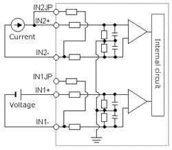
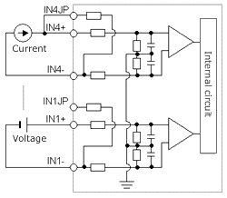
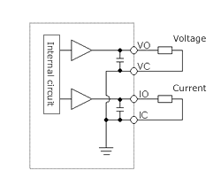
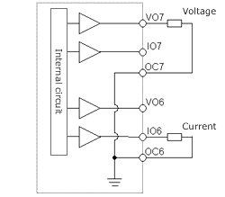

Analogue Input Specifications
| Module type | 23 point module | Analog exp. unit |
|---|---|---|
| Input channel | 2 ch | 4 ch |
| Input range | 0 - 10V (10.24V max.) | 0 - 10V (10.24V max.) |
| — | -10 to +10V (±10.24V max.) | |
| 0 - 20mA (20.48mA max.) | 0 - 20mA (20.48mA max.) | |
| — | 4 - 20mA (20.38mA max.) | |
| Resolution | 12 bits | |
| Accuracy | ±1 % of full scale | |
| Linearity | Max. +/-3 units | |
| Current input impedance | Approx. 249 Ω | |
| Voltage input impedance | Approx. 100 kΩ | Approx. 200 kΩ |
| Input delay time | 20 ms | |
| Channel to internal circuit insulation | Not insulated | Insulated |
| Channel-to-channel insulation | Not insulated | |
| Circuit diagram (23 point type) | Circuit diagram (Analog expansion unit) |
|---|---|
|  |  |
Analogue Output Specifications
| Module type | 23 point module | Analog exp. unit | |
|---|---|---|---|
| Output channel | 1 ch | 2 ch | |
| Output range | 0 - 10V (10.24V max.) | 0 - 10V (10.24V max.) | |
| 0 - 20mA (20.48mA max.) | 0 - 20mA (20.48mA max.) | ||
| — | 4 - 20mA (20.38mA max.) | ||
| Resolution | 12 bits | ||
| Accuracy | ±1 % of full scale | ||
| Current output | Allowable load | 10 to 500 Ω | |
| Output allowable capacity | Maximum 2000 pF | ||
| Output allowable inductance | Maximum 1 H | ||
| Voltage output | Allowable load | Maximum 10 KΩ | |
| Output allowable impedance | Maximum 1 µF | ||
| Circuit diagram (23 point type) | Circuit diagram (Analog expansion unit) |
|---|---|
|  |  |
High-Speed Counter Specifications
| Single phase | Two phase | ||
|---|---|---|---|
| Available input | X0.X2.X4.X6 | X0 and X2 in pair | |
| Input voltage | ON | 15 V | |
| OFF | 5 V | ||
| Count pulse width | 100 µs | ||
| Maximum count frequency | 10 kHz each channel | ||
| Count register | 16 bits | ||
| Coincidence output | Allowed | ||
| On/Off-preset | Allowed | ||
| Upper/lower limit setting | Not allowed | ||
| Preload/strobe | Allowed | ||
- *
- Since 10 point type does not have input X6, counter channel is up to 3 ch.
RTD Input Specifications
| ITEM | Specifications | |
|---|---|---|
| No. of input channel | 4 | |
| RTD type supported | Pt100 ( 2 or 3 wire ) | |
| Input Ranges | -100.0 °C to +600.0 °C -148.0 °F to +1112.0 °F |
|
| Input resolution | 0.1 °C / 0.1 °F | |
| Accuracy | +/-0.5% of full scale over temp. range | |
| Error detection | Data H7FFF and LED blinking at below -110°C (-166°F) or beyond +610°C (+1130°F). (including wire breaking or cable disconnection) |
|
| Response time | 141 ms | 563 ms |
| Cable length (shielded) | 100 m (Max.) *1 | |
- *1
- The max. cable length is 100m, however it depends on noise environment or other conditions.
PWM Output / Pulse Train Output Specifications
| 23-point and 28-point type Relay Output |
10/14/28-point Transistor Output |
|
|---|---|---|
| Available outputs | Y100 (optional) | Y100-Y103 (optional) |
| Load voltage | 5/12/24 V | 12/24 V |
| Minimum load current | 1mA | |
| PWM max. output frequency *1 | 2 kHz total channels | |
| Pulse train max. output frequency *1 | 5 kHz total channels | |
- *1
- Relay outputs cannot keep up with high frequencies; these outputs should be used at the operating frequency upon confirmation.
Potentiometer Analogue Input Specifications
| Number of potentiometer inputs | 2 |
|---|---|
| Input range | 0-1023 (H0 - H3FF) |
| Resolution | 10 bits |
| Input filter | By user settings |
Interrupt Input Specifications
| Input that can be used | X1.X3.X5.X7 (by user settings) | |
|---|---|---|
| Input voltage | ON | 15 V |
| OFF | 5 V | |